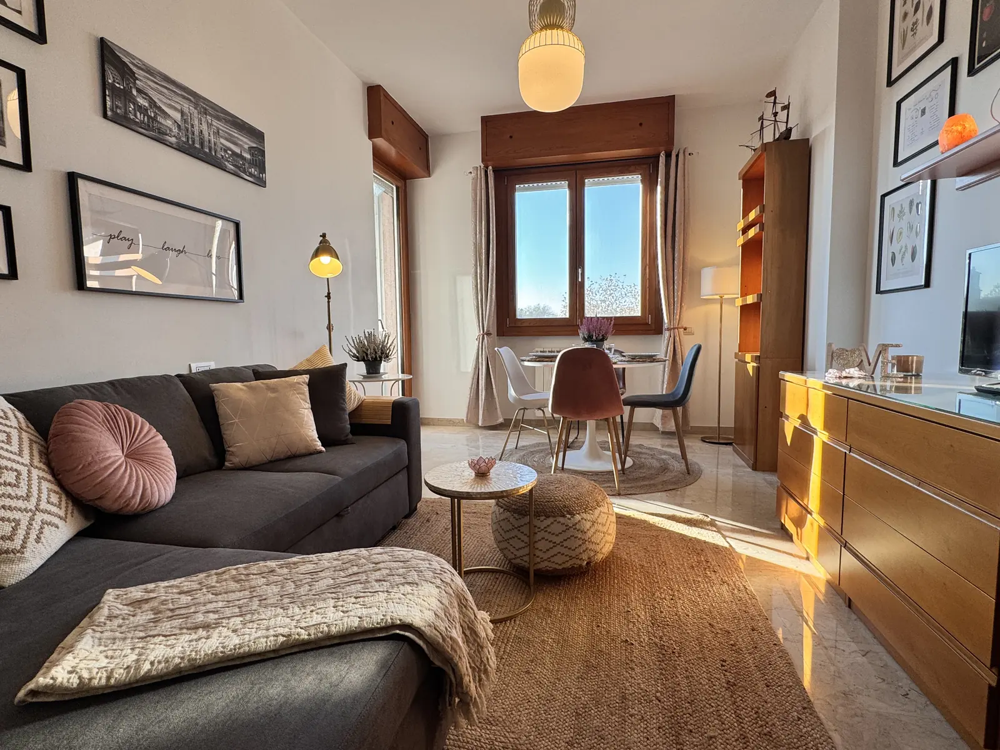
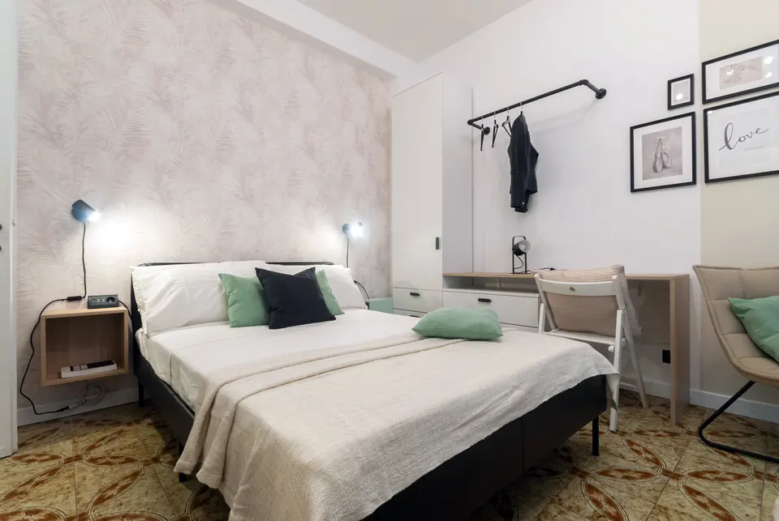
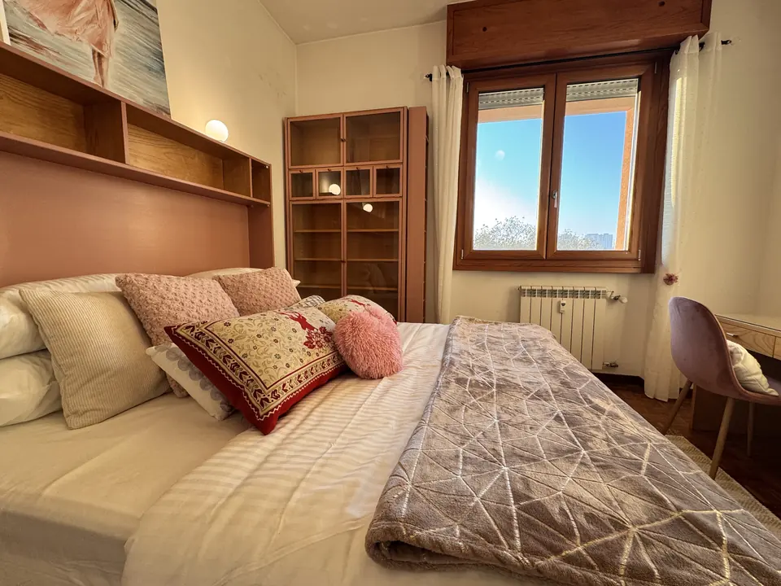
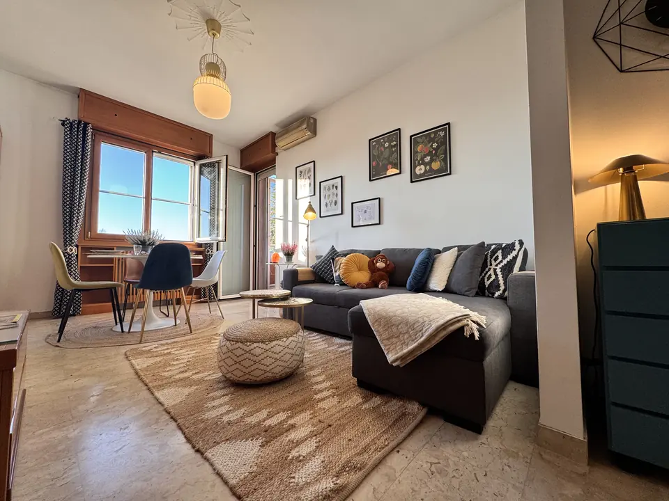
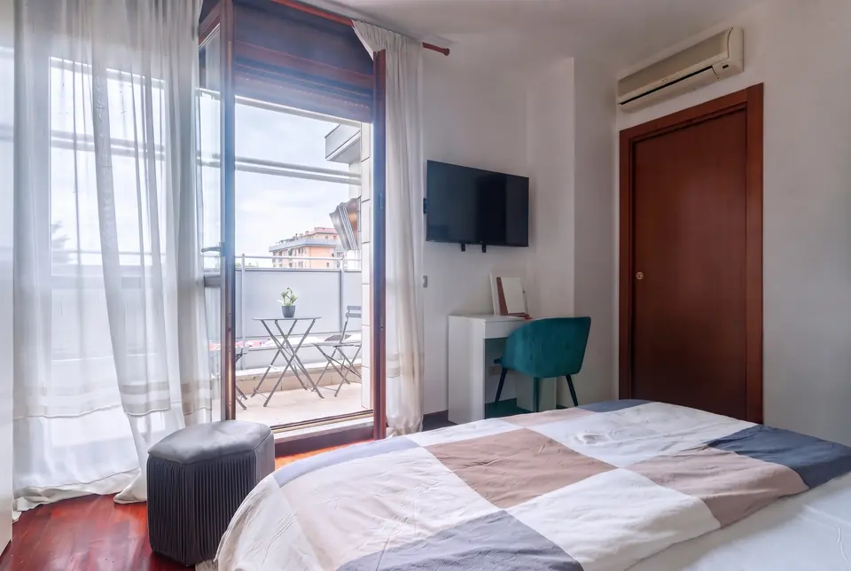

Quattro appartamenti arredati sulla M1: Duomo in 20 minuti, Rho Fiera senza cambi. Utenze incluse, contratto registrato, un host che risponde.


Mensile · 1–2 ospiti

Da 85 €/notte · fino a 8

In arrivo

Mensile · 1–2 ospiti
mesi di deposito
dal Duomo con la M1
notti minime per il contratto mensile
lingue del sito